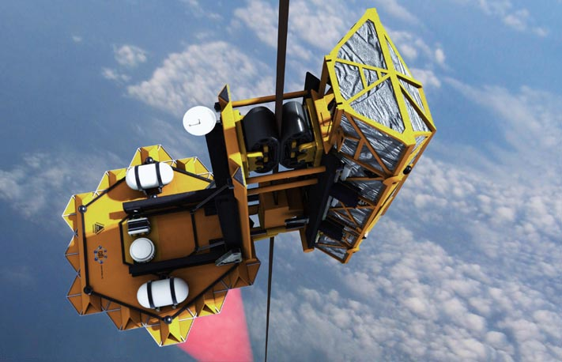

The carbon nanotubes on the market today are beyond capable of sustaining the tension required for a space elevator ribbon, and they are rapidly improving. For more information on carbon nanotube advancements and capabilities click here.
The goals for space elevator climber vehicles are speed, efficiency, and carrying capacity. It's about how many kilograms can be carried to space per year per dollar. The current speeds are around 60 miles per hour, and there are various opportunities for greatly improving this speed.
The estimated carrying capacity of one space elevator is _____ are a cost of $___.__ per kilogram of load.
This estimate is for loads to geostationary orbit, and consequently, anywhere inside the asteroid belt.
The technology used to power the climbers is light-based, a lazer generated on Earth and received by an array on the climber vehicle. The current efficiency of this system is around 80%.
Climber vehicles can use direct solar energy as an alternative.
The space elevator is somewhat resilient to impact, but ultimately the best approach is to monitor and evade space debris.
Current tracking systems for space debris are robust, and can be improved to a satisfactory state for the space elevator.
The base of the space elevator will need to be set on the ocean where it can move and evade space debris.
